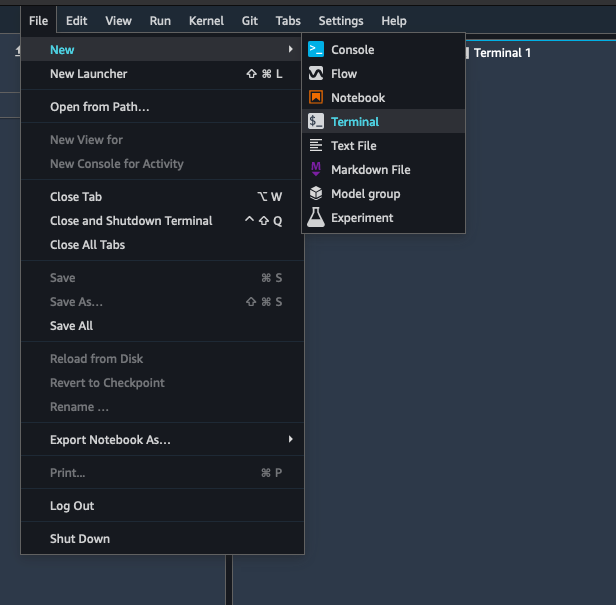
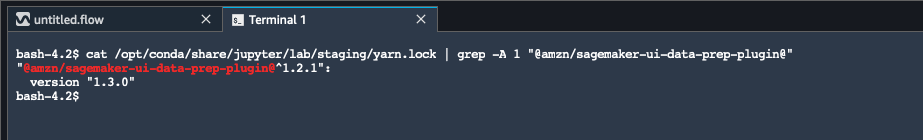

Prepare ML Data with Amazon SageMaker Data Wrangler
Amazon SageMaker Data Wrangler (Data Wrangler) is a feature of Amazon SageMaker Studio that provides an end-to-end solution to import, prepare, transform, featurize, and analyze data. You can integrate a Data Wrangler data preparation flow into your machine learning (ML) workflows to simplify and streamline data pre-processing and feature engineering using little to no coding. You can also add your own Python scripts and transformations to customize workflows.
Data Wrangler provides the following core functionalities to help you analyze and prepare data for machine learning applications.
-
Import – Connect to and import data from Amazon Simple Storage Service (Amazon S3), Amazon Athena (Athena), Amazon Redshift, Snowflake, and Databricks.
-
Data Flow – Create a data flow to define a series of ML data prep steps. You can use a flow to combine datasets from different data sources, identify the number and types of transformations you want to apply to datasets, and define a data prep workflow that can be integrated into an ML pipeline.
-
Transform – Clean and transform your dataset using standard transforms like string, vector, and numeric data formatting tools. Featurize your data using transforms like text and date/time embedding and categorical encoding.
-
Generate Data Insights – Automatically verify data quality and detect abnormalities in your data with Data Wrangler Data Insights and Quality Report.
-
Analyze – Analyze features in your dataset at any point in your flow. Data Wrangler includes built-in data visualization tools like scatter plots and histograms, as well as data analysis tools like target leakage analysis and quick modeling to understand feature correlation.
-
Export – Export your data preparation workflow to a different location. The following are example locations:
-
Amazon Simple Storage Service (Amazon S3) bucket
-
Amazon SageMaker Model Building Pipelines – Use SageMaker Pipelines to automate model deployment. You can export the data that you've transformed directly to the pipelines.
-
Amazon SageMaker Feature Store – Store the features and their data in a centralized store.
-
Python script – Store the data and their transformations in a Python script for your custom workflows.
-
To start using Data Wrangler, see Get Started with Data Wrangler.
Important
Data Wrangler no longer supports Jupyter Lab Version 1 (JL1). To access the latest features and updates, update to Jupyter Lab Version 3. For more information about upgrading, see View and update the JupyterLab version of an application from the console.
Important
The information and procedures in this guide use the latest version of Amazon SageMaker Studio. For information about updating Studio to the latest version, see Amazon SageMaker Studio UI Overview.
You must use Studio version 1.3.0 or later. Use the following procedure to open Amazon SageMaker Studio and see which version you're running.
To open Studio and check its version, see the following procedure.
-
Use the steps in Prerequisites to access Data Wrangler through Amazon SageMaker Studio.
-
Next to the user you want to use to launch Studio, select Launch app.
-
Choose Studio.
-
After Studio loads, select File, then New, and then Terminal.
 -
Once you have launched Studio, select File, then New, and then Terminal.
-
Enter
cat /opt/conda/share/jupyter/lab/staging/yarn.lock | grep -A 1 "@amzn/sagemaker-ui-data-prep-plugin@"to print the version of your Studio instance. You must have Studio version 1.3.0 to use Snowflake.
You can update Amazon SageMaker Studio from within the AWS Management Console. For more information about updating Studio, see Amazon SageMaker Studio UI Overview.
Topics
- Get Started with Data Wrangler
- Import
- Create and Use a Data Wrangler Flow
- Get Insights On Data and Data Quality
- Automatically Train Models on Your Data Flow
- Transform Data
- Analyze and Visualize
- Reusing Data Flows for Different Datasets
- Export
- Use an Interactive Data Preparation Widget in an Amazon SageMaker Studio Notebook to Get Data Insights
- Security and Permissions
- Release Notes
- Troubleshoot
- Increase Amazon EC2 Instance Limit
- Update Data Wrangler
- Shut Down Data Wrangler